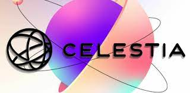
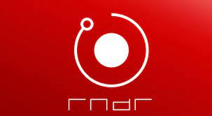
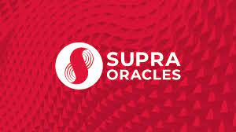

PROFIL SAYA
Nama lengkap : Dimas Akbar A
Nim : 10123162
Kelas : IF-4
BITCOIN
Bitcoin adalah bentuk mata uang digital yang terdesentralisasi. Dibuat pada tahun 2009 oleh entitas atau individu yang menggunakan nama samaran Satoshi Nakamoto, Bitcoin memungkinkan pertukaran nilai antar dua pihak tanpa melibatkan perantara seperti bank. Beroperasi di atas teknologi blockchain, Bitcoin menggabungkan jaringan, kriptokurensi, dan teknologi rantai blok untuk merekam transaksi secara transparan, mencegah pengeluaran ganda, dan memastikan konsensus.
Bitcoin diperoleh melalui proses penambangan, di mana para penambang memverifikasi blok transaksi dan diberi imbalan dengan Bitcoin. Selain itu, Bitcoin dapat dipertukarkan dengan mata uang fiat seperti dolar atau euro
ETHEREUM
Ethereum adalah platform blockchain terdesentralisasi yang dikenal karena kriptonya, ether (ETH). Dibangun di atas teknologi rantai blok, Ethereum memungkinkan pengguna membuat transaksi, menghasilkan bunga atas aset mereka melalui smart contracts, dan membangun aplikasi terdesentralisasi. Ether dapat digunakan sebagai mata uang digital dalam transaksi keuangan, investasi, atau simpanan nilai.
Ethereum berfungsi sebagai jaringan komputer global yang mengikuti serangkaian aturan yang disebut protokol Ethereum. Protokol ini menjadi dasar bagi berbagai aplikasi terdesentralisasi dan smart contracts, yang memungkinkan pelaksanaan otomatis dari perjanjian digital tanpa perantara
CELESTIA

Celestia adalah jaringan modular data availability (DA) yang dapat meningkatkan skala keamanan dengan jumlah pengguna, memudahkan siapa pun untuk meluncurkan blockchain mereka sendiri. Dengan fokus pada skabilitas blockchain, Celestia memanfaatkan struktur modularnya untuk meningkatkan kapasitas dan memberdayakan pengembang dalam membangun dan memelihara blockchain. Ini mencakup lapisan konsensus dan data availability yang dapat diplug-in, memungkinkan implementasi blockchain terdesentralisasi tanpa kompleksitas tambahan
RENDER

Render Crypto merujuk pada Render Network, sebuah platform blockchain yang menyediakan jaringan peer-to-peer untuk penyediaan daya komputasi GPU (Graphics Processing Unit) untuk proyek-rendering 3D. Render Network memungkinkan pengguna untuk menyumbangkan kekuatan komputasi mereka dan mendapatkan kripto sebagai imbalan. Ini merupakan pasar terdesentralisasi yang menghubungkan pengguna yang membutuhkan daya komputasi grafis dengan mereka yang memiliki GPU yang tidak terpakai.Render Network memanfaatkan teknologi blockchain untuk menciptakan platform yang efisien, memungkinkan para seniman dan profesional kreatif untuk memperluas kemampuan rendering mereka secara on-demand. Token RNDR digunakan dalam ekosistem ini untuk melacak dan mengelola pekerjaan render, menciptakan sistem terdesentralisasi yang lebih efisien.
SUPRA

Supra Crypto adalah platform blockchain terkini yang mengkhususkan diri dalam menyediakan ekosistem DeFi (Decentralized Finance) dan data dunia nyata. Mereka dikenal dengan protokol orakel yang akurat, aman, dan andal dengan finalitas cepat. Salah satu inovasi utama Supra Crypto adalah Moonshot, protokol konsensus yang memungkinkan tahap-tahap konsensus tumpang tindih, memberikan kecepatan dan efisiensi yang tinggi.
Supra Crypto juga menawarkan program airdrop, seperti $SUPRA, yang unik karena tidak hanya memberikan hadiah dalam bentuk mata uang kripto, tetapi juga melibatkan token governance. Ini memberikan partisipan hak suara dalam pengambilan keputusan di platform.
CARDANO
Cardano (ADA) adalah platform blockchain terdesentralisasi generasi ketiga yang mendukung mata uang kripto ADA. Tujuan Cardano adalah menjadi platform blockchain paling berkelanjutan secara lingkungan. Cardano menggunakan mekanisme konsensus unik berbasis proof-of-stake yang disebut Ouroboros.
Cardano menawarkan desentralisasi tinggi dan fokus pada keberlanjutan lingkungan. Sebagai platform open-source, Cardano dirancang untuk menjadi alternatif bagi blockchain lain, seperti Ethereum, dengan fokus pada skalabilitas dan interoperabilitas.